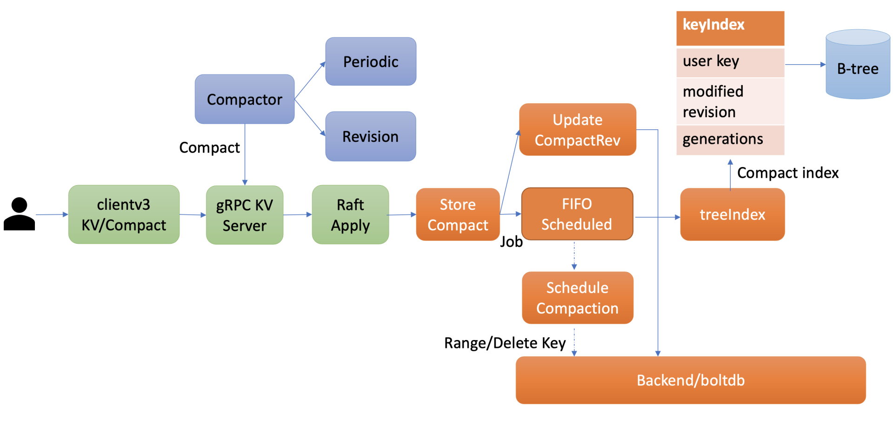
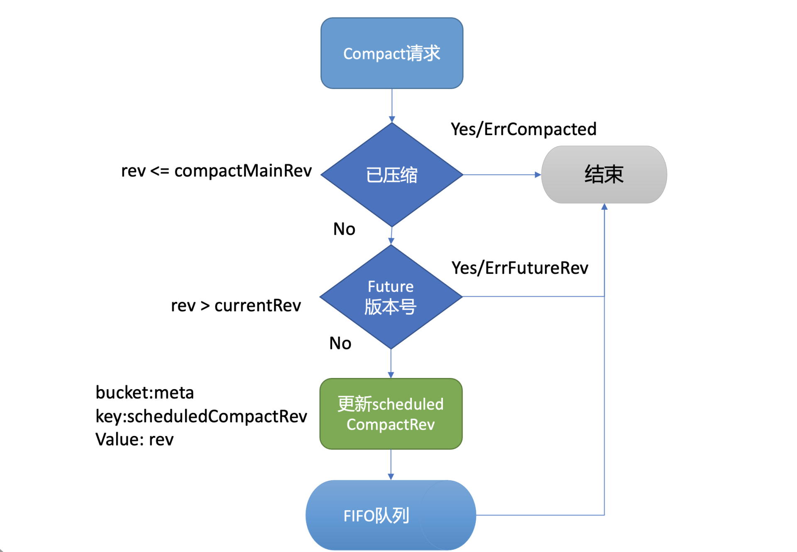
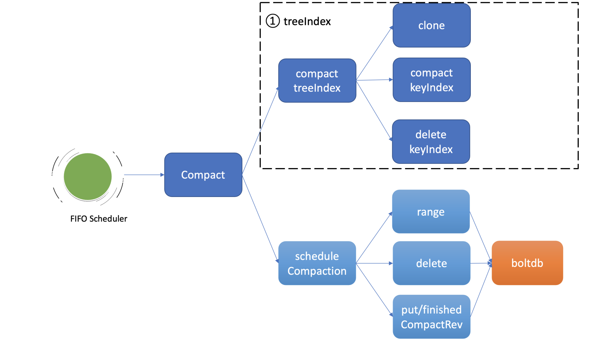
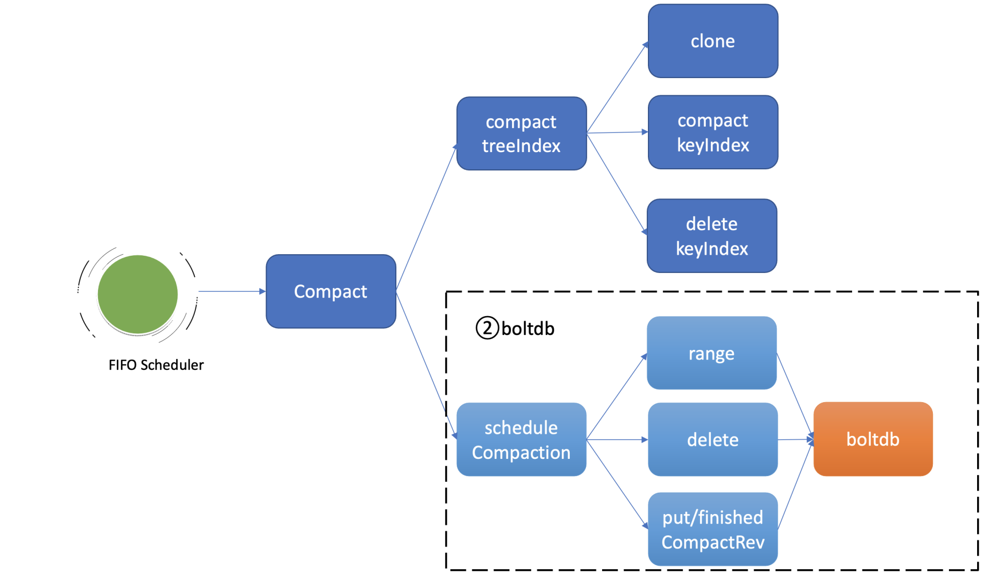

- 00 开篇词 为什么你要学习etcd_.md.html
- 01 etcd的前世今生：为什么Kubernetes使用etcd？.md.html
- 02 基础架构：etcd一个读请求是如何执行的？.md.html
- 03 基础架构：etcd一个写请求是如何执行的？.md.html
- 04 Raft协议：etcd如何实现高可用、数据强一致的？.md.html
- 05 鉴权：如何保护你的数据安全？.md.html
- 06 租约：如何检测你的客户端存活？.md.html
- 07 MVCC：如何实现多版本并发控制？.md.html
- 08 Watch：如何高效获取数据变化通知？.md.html
- 09 事务：如何安全地实现多key操作？.md.html
- 10 boltdb：如何持久化存储你的key-value数据？.md.html
- 11 压缩：如何回收旧版本数据？.md.html
- 12 一致性：为什么基于Raft实现的etcd还会出现数据不一致？.md.html
- 13 db大小：为什么etcd社区建议db大小不超过8G？.md.html
- 14 延时：为什么你的etcd请求会出现超时？.md.html
- 15 内存：为什么你的etcd内存占用那么高？.md.html
- 16 性能及稳定性（上）：如何优化及扩展etcd性能？.md.html
- 17 性能及稳定性（下）：如何优化及扩展etcd性能_.md.html
- 18 实战：如何基于Raft从0到1构建一个支持多存储引擎分布式KV服务？.md.html
- 19 Kubernetes基础应用：创建一个Pod背后etcd发生了什么？.md.html
- 20 Kubernetes高级应用：如何优化业务场景使etcd能支撑上万节点集群？.md.html
- 21 分布式锁：为什么基于etcd实现分布式锁比Redis锁更安全？.md.html
- 22 配置及服务发现：解析etcd在API Gateway开源项目中应用.md.html
- 23 选型：etcd_ZooKeeper_Consul等我们该如何选择？.md.html
- 24 运维：如何构建高可靠的etcd集群运维体系？.md.html
- 特别放送 成员变更：为什么集群看起来正常，移除节点却会失败呢？.md.html
- 结束语 搞懂etcd，掌握通往分布式存储系统之门的钥匙.md.html
- 捐赠
11 压缩：如何回收旧版本数据？
你好，我是唐聪。
今天是大年初一，你过年都有什么安排？今年过年对我来说，其实是比较特别的。除了家庭团聚走亲访友外，我多了一份陪伴。感谢你和我在这个专栏里一块精进，我衷心祝你在新的一年里平安喜乐，万事胜意。
这节课是我们基础篇里的最后一节，正巧这节课的内容也是最轻松的。新年新气象，我们就带着轻松的心情开始吧！
在07里，我们知道etcd中的每一次更新、删除key操作，treeIndex的keyIndex索引中都会追加一个版本号，在boltdb中会生成一个新版本boltdb key和value。也就是随着你不停更新、删除，你的etcd进程内存占用和db文件就会越来越大。很显然，这会导致etcd OOM和db大小增长到最大db配额，最终不可写。
那么etcd是通过什么机制来回收历史版本数据，控制索引内存占用和db大小的呢？
这就是我今天要和你分享的etcd压缩机制。希望通过今天的这节课，能帮助你理解etcd压缩原理，在使用etcd过程中能根据自己的业务场景，选择适合的压缩策略，避免db大小增长失控而不可写入，帮助你构建稳定的etcd服务。
整体架构

在了解etcd压缩模块实现细节前，我先给你画了一幅压缩模块的整体架构图。从图中可知，你可以通过client API发起人工的压缩(Compact)操作，也可以配置自动压缩策略。在自动压缩策略中，你可以根据你的业务场景选择合适的压缩模式。目前etcd支持两种压缩模式，分别是时间周期性压缩和版本号压缩。
当你通过API发起一个Compact请求后，KV Server收到Compact请求提交到Raft模块处理，在Raft模块中提交后，Apply模块就会通过MVCC模块的Compact接口执行此压缩任务。
Compact接口首先会更新当前server已压缩的版本号，并将耗时昂贵的压缩任务保存到FIFO队列中异步执行。压缩任务执行时，它首先会压缩treeIndex模块中的keyIndex索引，其次会遍历boltdb中的key，删除已废弃的key。
以上就是压缩模块的一个工作流程。接下来我会首先和你介绍如何人工发起一个Compact操作，然后详细介绍周期性压缩模式、版本号压缩模式的工作原理，最后再给你介绍Compact操作核心的原理。
压缩特性初体验
在使用etcd过程中，当你遇到”etcdserver: mvcc: database space exceeded”错误时，若是你未开启压缩策略导致db大小达到配额，这时你可以使用etcdctl compact命令，主动触发压缩操作，回收历史版本。
如下所示，你可以先通过endpoint status命令获取etcd当前版本号，然后再通过etcdctl compact命令发起压缩操作即可。
# 获取etcd当前版本号
$ rev=$(etcdctl endpoint status --write-out="json" | egrep -o '"revision":[0-9]*' | egrep -o '[0-9].*')
$ echo $rev
9
# 执行压缩操作，指定压缩的版本号为当前版本号
$ etcdctl compact $rev
Compacted revision 9
# 压缩一个已经压缩的版本号
$ etcdctl compact $rev
Error: etcdserver: mvcc: required revision has been compacted
# 压缩一个比当前最大版号大的版本号
$ etcdctl compact 12
Error: etcdserver: mvcc: required revision is a future revision
请注意，如果你压缩命令传递的版本号小于等于当前etcd server记录的压缩版本号，etcd server会返回已压缩错误(“mvcc: required revision has been compacted”)给client。如果版本号大于当前etcd server最新的版本号，etcd server则返回一个未来的版本号错误给client(“mvcc: required revision is a future revision”)。
执行压缩命令的时候，不少初学者有一个常见的误区，就是担心压缩会不会把我最新版本数据给删除？
压缩的本质是回收历史版本，目标对象仅是历史版本，不包括一个key-value数据的最新版本，因此你可以放心执行压缩命令，不会删除你的最新版本数据。不过我在08介绍Watch机制时提到，Watch特性中的历史版本数据同步，依赖于MVCC中是否还保存了相关数据，因此我建议你不要每次简单粗暴地回收所有历史版本。
在生产环境中，我建议你精细化的控制历史版本数，那如何实现精细化控制呢？
主要有两种方案，一种是使用etcd server的自带的自动压缩机制，根据你的业务场景，配置合适的压缩策略即可。
另外一种方案是如果你觉得etcd server的自带压缩机制无法满足你的诉求，想更精细化的控制etcd保留的历史版本记录，你就可以基于etcd的Compact API，在业务逻辑代码中、或定时任务中主动触发压缩操作。你需要确保发起Compact操作的程序高可用，压缩的频率、保留的历史版本在合理范围内，并最终能使etcd的db 大小保持平稳，否则会导致db大小不断增长，直至db配额满，无法写入。
在一般情况下，我建议使用etcd自带的压缩机制。它支持两种模式，分别是按时间周期性压缩和保留版本号的压缩，配置相应策略后，etcd节点会自动化的发起Compact操作。
接下来我就和你详细介绍下etcd的周期性和保留版本号压缩模式。
周期性压缩
首先是周期性压缩模式，它适用于什么场景呢？
当你希望etcd只保留最近一段时间写入的历史版本时，你就可以选择配置etcd的压缩模式为periodic，保留时间为你自定义的1h等。
如何给etcd server配置压缩模式和保留时间呢?
如下所示，etcd server提供了配置压缩模式和保留时间的参数：
--auto-compaction-retention '0'
Auto compaction retention length. 0 means disable auto Compaction.
--auto-compaction-mode 'periodic'
Interpret 'auto-Compaction-retention' one of: periodic|revision.
auto-compaction-mode为periodic时，它表示启用时间周期性压缩，auto-compaction-retention为保留的时间的周期，比如1h。
auto-compaction-mode为revision时，它表示启用版本号压缩模式，auto-compaction-retention为保留的历史版本号数，比如10000。
注意，etcd server的auto-compaction-retention为’0’时，将关闭自动压缩策略，
那么周期性压缩模式的原理是怎样的呢？ etcd是如何知道你配置的1h前的etcd server版本号呢？
其实非常简单，etcd server启动后，根据你的配置的模式periodic，会创建periodic Compactor，它会异步的获取、记录过去一段时间的版本号。periodic Compactor组件获取你设置的压缩间隔参数1h， 并将其划分成10个区间，也就是每个区间6分钟。每隔6分钟，它会通过etcd MVCC模块的接口获取当前的server版本号，追加到rev数组中。
因为你只需要保留过去1个小时的历史版本，periodic Compactor组件会通过当前时间减去上一次成功执行Compact操作的时间，如果间隔大于一个小时，它会取出rev数组的首元素，通过etcd server的Compact接口，发起压缩操作。
需要注意的一点是，在etcd v3.3.3版本之前，不同的etcd版本对周期性压缩的行为是有一定差异的，具体的区别你可以参考下官方文档。
版本号压缩
了解完周期性压缩模式，我们再看看版本号压缩模式，它又适用于什么场景呢？
当你写请求比较多，可能产生比较多的历史版本导致db增长时，或者不确定配置periodic周期为多少才是最佳的时候，你可以通过设置压缩模式为revision，指定保留的历史版本号数。比如你希望etcd尽量只保存1万个历史版本，那么你可以指定compaction-mode为revision，auto-compaction-retention为10000。
它的实现原理又是怎样的呢?
也很简单，etcd启动后会根据你的压缩模式revision，创建revision Compactor。revision Compactor会根据你设置的保留版本号数，每隔5分钟定时获取当前server的最大版本号，减去你想保留的历史版本数，然后通过etcd server的Compact接口发起如下的压缩操作即可。
# 获取当前版本号，减去保留的版本号数
rev := rc.rg.Rev() - rc.retention
# 调用server的Compact接口压缩
_，err := rc.c.Compact(rc.ctx，&pb.CompactionRequest{Revision: rev})
压缩原理
介绍完两种自动化的压缩模式原理后，接下来我们就深入分析下压缩的本质。当etcd server收到Compact请求后，它是如何执行的呢？ 核心原理是什么？
如前面的整体架构图所述，Compact请求经过Raft日志同步给多数节点后，etcd会从Raft日志取出Compact请求，应用此请求到状态机执行。
执行流程如下图所示，MVCC模块的Compact接口首先会检查Compact请求的版本号rev是否已被压缩过，若是则返回ErrCompacted错误给client。其次会检查rev是否大于当前etcd server的最大版本号，若是则返回ErrFutureRev给client，这就是我们上面执行etcdctl compact命令所看到的那两个错误原理。
通过检查后，Compact接口会通过boltdb的API在meta bucket中更新当前已调度的压缩版本号(scheduledCompactedRev)号，然后将压缩任务追加到FIFO Scheduled中，异步调度执行。

为什么Compact接口需要持久化存储当前已调度的压缩版本号到boltdb中呢？
试想下如果不保存这个版本号，etcd在异步执行的Compact任务过程中crash了，那么异常节点重启后，各个节点数据就会不一致。
因此etcd通过持久化存储scheduledCompactedRev，节点crash重启后，会重新向FIFO Scheduled中添加压缩任务，已保证各个节点间的数据一致性。
异步的执行压缩任务会做哪些工作呢？
首先我们回顾下07里介绍的treeIndex索引模块，它是etcd支持保存历史版本的核心模块，每个key在treeIndex模块中都有一个keyIndex数据结构，记录其历史版本号信息。

如上图所示，因此异步压缩任务的第一项工作，就是压缩treeIndex模块中的各key的历史版本、已删除的版本。为了避免压缩工作影响读写性能，首先会克隆一个B-tree，然后通过克隆后的B-tree遍历每一个keyIndex对象，压缩历史版本号、清理已删除的版本。
假设当前压缩的版本号是CompactedRev， 它会保留keyIndex中最大的版本号，移除小于等于CompactedRev的版本号，并通过一个map记录treeIndex中有效的版本号返回给boltdb模块使用。
为什么要保留最大版本号呢?
因为最大版本号是这个key的最新版本，移除了会导致key丢失。而Compact的目的是回收旧版本。当然如果keyIndex中的最大版本号被打了删除标记(tombstone)， 就会从treeIndex中删除这个keyIndex，否则会出现内存泄露。
Compact任务执行完索引压缩后，它通过遍历B-tree、keyIndex中的所有generation获得当前内存索引模块中有效的版本号，这些信息将帮助etcd清理boltdb中的废弃历史版本。

压缩任务的第二项工作就是删除boltdb中废弃的历史版本数据。如上图所示，它通过etcd一个名为scheduleCompaction任务来完成。
scheduleCompaction任务会根据key区间，从0到CompactedRev遍历boltdb中的所有key，通过treeIndex模块返回的有效索引信息，判断这个key是否有效，无效则调用boltdb的delete接口将key-value数据删除。
在这过程中，scheduleCompaction任务还会更新当前etcd已经完成的压缩版本号(finishedCompactRev)，将其保存到boltdb的meta bucket中。
scheduleCompaction任务遍历、删除key的过程可能会对boltdb造成压力，为了不影响正常读写请求，它在执行过程中会通过参数控制每次遍历、删除的key数（默认为100，每批间隔10ms），分批完成boltdb key的删除操作。
为什么压缩后db大小不减少呢?
当你执行完压缩任务后，db大小减少了吗？ 事实是并没有减少。那为什么我们都通过boltdb API删除了key，db大小还不减少呢？
上节课我们介绍boltdb实现时，提到过boltdb将db文件划分成若干个page页，page页又有四种类型，分别是meta page、branch page、leaf page以及freelist page。branch page保存B+ tree的非叶子节点key数据，leaf page保存bucket和key-value数据，freelist会记录哪些页是空闲的。
当我们通过boltdb删除大量的key，在事务提交后B+ tree经过分裂、平衡，会释放出若干branch/leaf page页面，然而boltdb并不会将其释放给磁盘，调整db大小操作是昂贵的，会对性能有较大的损害。
boltdb是通过freelist page记录这些空闲页的分布位置，当收到新的写请求时，优先从空闲页数组中申请若干连续页使用，实现高性能的读写（而不是直接扩大db大小）。当连续空闲页申请无法得到满足的时候， boltdb才会通过增大db大小来补充空闲页。
一般情况下，压缩操作释放的空闲页就能满足后续新增写请求的空闲页需求，db大小会趋于整体稳定。
小结
最后我们来小结下今天的内容。
etcd压缩操作可通过API人工触发，也可以配置压缩模式由etcd server自动触发。压缩模式支持按周期和版本两种。在周期模式中你可以实现保留最近一段时间的历史版本数，在版本模式中你可以实现保留期望的历史版本数。
压缩的核心工作原理分为两大任务，第一个任务是压缩treeIndex中的各key历史索引，清理已删除key，并将有效的版本号保存到map数据结构中。
第二个任务是删除boltdb中的无效key。基本原理是根据版本号遍历boltdb已压缩区间范围的key，通过treeIndex返回的有效索引map数据结构判断key是否有效，无效则通过boltdb API删除它。
最后在执行压缩的操作中，虽然我们删除了boltdb db的key-value数据，但是db大小并不会减少。db大小不变的原因是存放key-value数据的branch和leaf页，它们释放后变成了空闲页，并不会将空间释放给磁盘。
boltdb通过freelist page来管理一系列空闲页，后续新增的写请求优先从freelist中申请空闲页使用，以提高性能。在写请求速率稳定、新增key-value较少的情况下，压缩操作释放的空闲页就可以基本满足后续写请求对空闲页的需求，db大小就会处于一个基本稳定、健康的状态。
思考题
你知道压缩与碎片整理(defrag)有哪些区别吗？为什么碎片整理会影响服务性能呢？ 你能想到哪些优化方案来降低碎片整理对服务性能的影响呢?
感谢你的阅读，如果你认为这节课的内容有收获，也欢迎把它分享给你的朋友，谢谢。
© 2019 - 2023 Liangliang Lee. Powered by gin and hexo-theme-book.